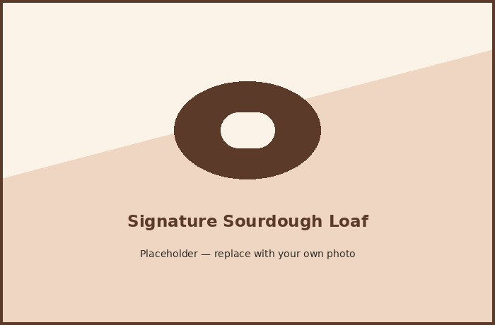

Welcome to North Star Bakery
If you have ever walked past Maple Street early in the morning, you have probably smelled us before you saw us. North Star Bakery has been baking bread and pastries in small batches since before most of our regulars can remember, and the ovens are usually going by five. Some people stop in on their way to work, others plan around us for a birthday or a weekend brunch. Either way, we would rather you leave with something warm than something perfect.
What We're Known For
Ask a regular what they order and you will probably hear "the sourdough" before you even finish the question. It takes a full day to make, start to finish, which is longer than most bakeries bother with anymore. We also do croissants that take three days of folding butter into dough, and cakes that get built to order rather than pulled from a case. None of it is fast. That is more or less the point.
Hours and Location
We are open Tuesday through Sunday, 7 a.m. to 3 p.m. Mondays are for resting and getting the next batch of dough started, so do not come knocking, we will not answer. You can find us at 214 Maple Street next to the community park, and there is usually a spot to park right out front if you catch us before the morning rush. If you are trying to grab something for a weekend event, call ahead. The good stuff tends to go by early afternoon.
Featured Item of the Week

This is the loaf people plan trips around. The dough sits for over twenty four hours before it ever sees the oven, which is why the crust cracks the way it does and the inside stays chewy instead of dense. We usually bake more on Saturdays because that is when it disappears fastest. If you want to try it warm, come early, and bring a little butter or honey if you have some at home.